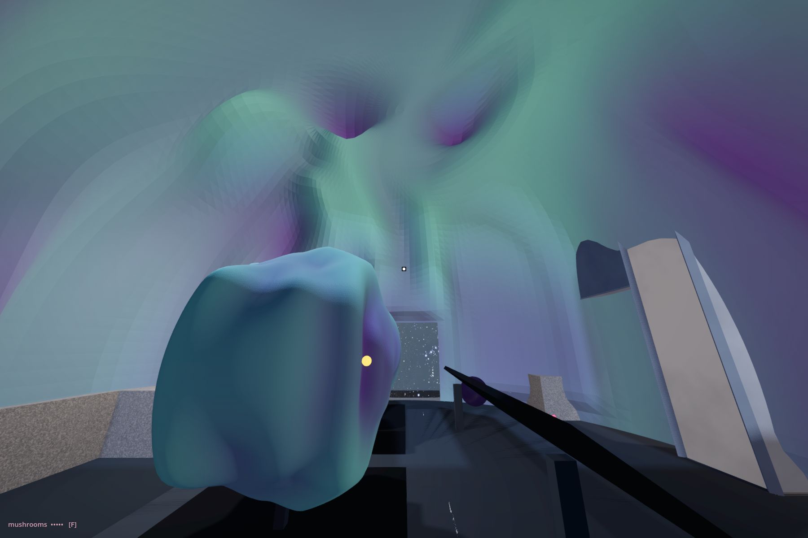
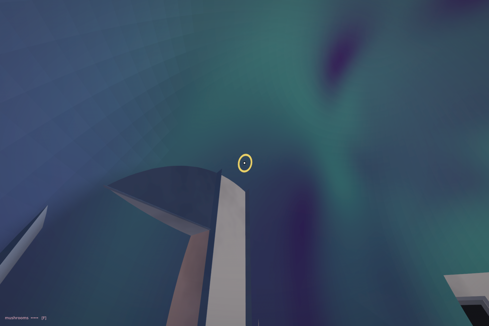
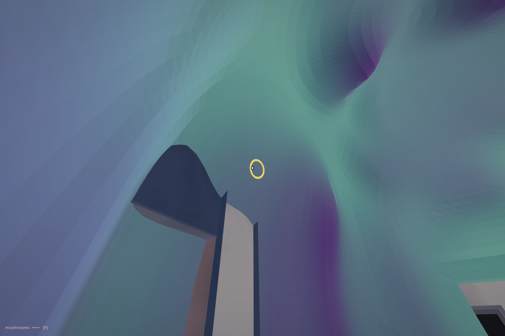
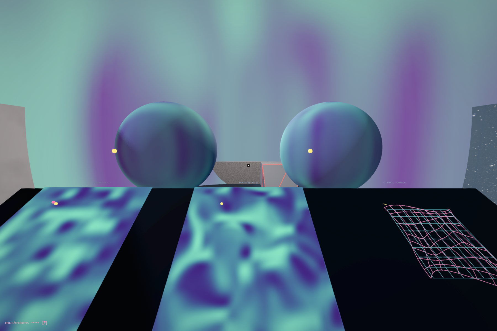
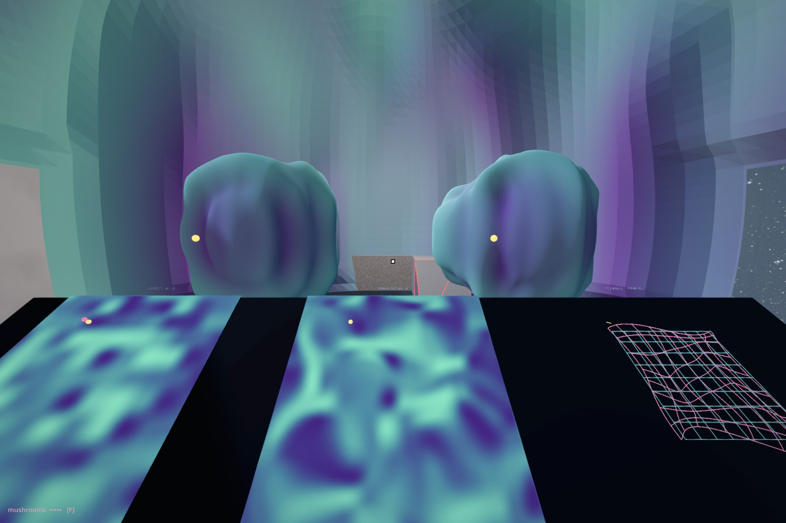

Noise Inside Noise · 25 September 2026
The enclosing body
receives relief.
The noise now changes the space around the visitor. The enclosing sphere starts with vertex displacement enabled: walls swell inward and open into hollows, while the floor and the edges of both doorways stay fixed.

Inside the actual museum, camera at 1.7 m. The smaller body and surrounding room receive the same warped field. This is a native Godot capture.
One value, another use

SKIN. Colour on the round support. The hollow yellow ring marks a direction shared with the small comparison spheres.
RELIEF. Same camera, field, warp amount and colour samples. The shader changes vertex positions; the ring follows the surface. Collision receives matching displaced vertices.The existing RELIEF button switches the small pair and the enclosing room together. WARP changes where the field is sampled. SAMPLE chooses another direction; ZERO removes the coordinate warp while retaining the base field. These are held configurations between actions.
The comparison before and after

Before this pass. The enclosure remained fixed through RELIEF, and the study started with round comparison bodies.
New arrival. The same camera and warp amount, with relief already enabled. The plates and coordinate grid retain their sampling rules. The room now has depth and lit faces.The chapter follows the change
The small comparison bodies have no collision. The enclosing wall does, and its collision follows the displaced surface. The floor and doorway edges stay fixed. We have written an exception into the surface so the changing body will still admit ours.
The reader arrives inside relief, removes it to follow an address from the coordinate grid to a coloured patch, then gives the same value a spatial consequence. The original code excerpts, projection discussion, supporting dark orb and closing question remain. A short excerpt from the actual vertex shader enters the chapter.
What was checked
65 focused native assertions, twelve sampled body routes and two floor rays passed. Godot exited 0. Fifteen synthetic mouse clicks used the actual museum pointer. Both openings remained clear at three tested heights. The unchanged floor supports the control approach.
The render uses a real vertex shader with the instrument’s CPU-generated noise samples. A separate CPU copy supplies matching collision. Across 4,096 sampled pixels, the GPU render and a temporary CPU-displaced reference differed by a mean RGB error of 0.0000099. The collision and shader expressions agree to under 0.000001 m. The arrival setting samples displacement from −0.774 to +0.797 m. This verifies the implementation; headset comfort and Quest performance remain open.
34 preservation/publication checks pass. Map cells, placements, sequence, primary selection, shared sampler and legacy default sphere are retained. Changes apply to the optional stand:warp study. No live museum bake/save or frozen book export was replaced. Reload the hall to construct the new enclosing surface.
The initial control route met the button rack and was rerouted around it. Two errors in the first relief test fixture were corrected: an unsupported array method, and a floor ray starting above the deformed roof. Diagnostic runs are retained. The final run has no script or shader error; unrelated UID, renderer, registry and hall-build messages remain in the log. Scripted camera aim and sampled walking are not tracked-headset or learner acceptance.